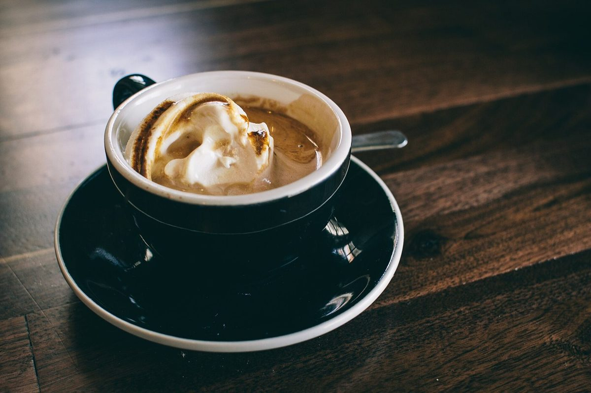

口コミ
こんな声があるかもしれない
お店を知った人の気持ちとして自然に想像できる声を、制作側が創作したものです。
以下は制作側が考えた創作のイメージ例で、実在のお客様の投稿ではありません。実際の口コミ・評価とは関係ありません。
いつか行ってみたい、と思わせてくれる店名です。まずはInstagramをのぞいて、どんなお店なのか見てみたいです。
営業時間などが分かったら、行ってみたいです。それまでは、Instagramの更新を楽しみにしています。
機会があれば訪ねてみたいお店です。営業の情報が分かったら、予定を立ててみたいです。
